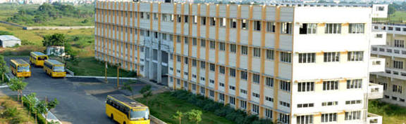

Dhanalakshmi College of Engineering (DCE) is a well-known engineering institution located in Chennai, India. Established in 2001, DCE has been committed to providing quality education and fostering innovation in the field of engineering and technology.
The college offers a variety of undergraduate and postgraduate programs in disciplines such as Computer Science, Electronics, Mechanical, Civil, and more. DCE is equipped with modern infrastructure, including state-of-the-art laboratories, libraries, and classrooms that create an ideal learning environment for students.
DCE emphasizes research and development, encouraging both students and faculty to participate in innovative projects. The institution collaborates with various industries and research organizations to provide practical exposure and enhance the employability of its graduates.
The faculty at Dhanalakshmi College of Engineering comprises experienced educators and industry professionals who are dedicated to mentoring students and guiding them towards successful careers. The college also promotes extracurricular activities and a vibrant campus life through various clubs, events, and sports activities.
Overall, Dhanalakshmi College of Engineering is recognized for its commitment to academic excellence, research contributions, and its role in shaping skilled engineers who can contribute to the technological advancements of society.